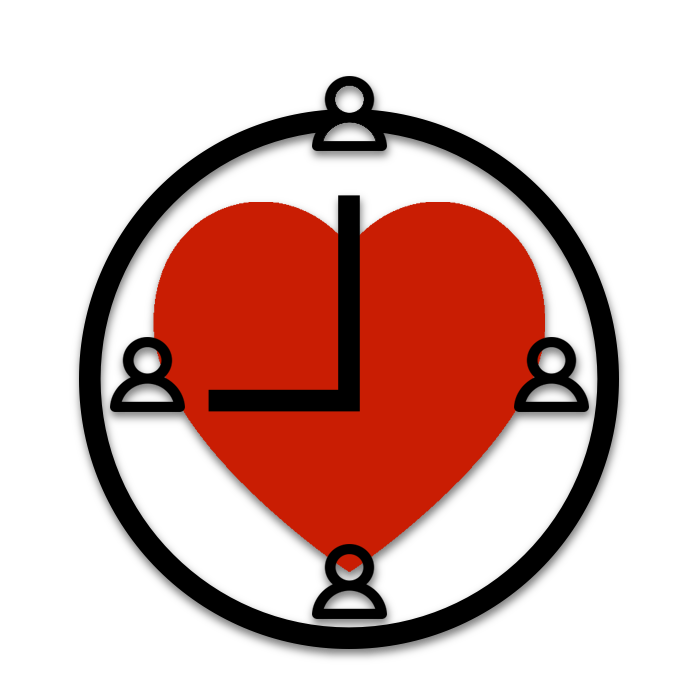

<nav class="navbar navbar-custom navbar-fixed-top" role="navigation">
    <div class="container">
        <div class="navbar-header">
            <button type="button" class="navbar-toggle" data-toggle="collapse" data-target=".navbar-main-collapse">
                <i class="fa fa-bars"></i>
            </button>
            <a class="navbar-brand page-scroll" href="index.html">
                  <span class="light">Keep</span>Touch
            </a>
        </div>

        <!-- Collect the nav links, forms, and other content for toggling -->
        <div class="collapse navbar-collapse navbar-right navbar-main-collapse">
            <ul class="nav navbar-nav">
                <!-- Hidden li included to remove active class from about link when scrolled up past about section -->
                <li class="hidden">
                    <a href="#page-top"></a>
                </li>
                <li>
                    <a class="page-scroll" href="contacts.html"><i class="fa fa-users"></i></a>
                </li>
                <li>
                    <a class="page-scroll" href="form.html"><i class="fa fa-plus-circle"></i></a>
                </li>
            </ul>
        </div>
        <!-- /.navbar-collapse -->
    </div>
    <!-- /.container -->
</nav>
